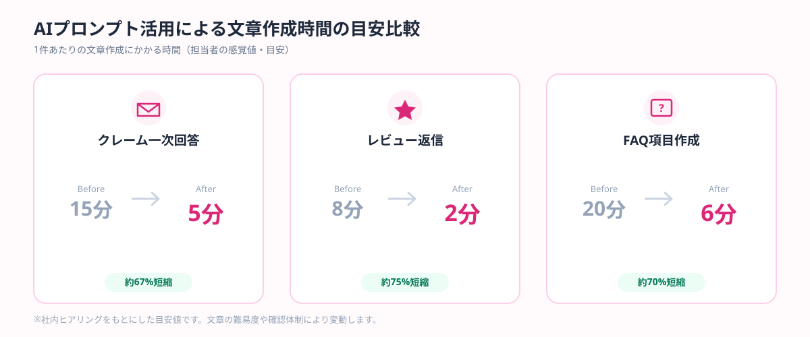
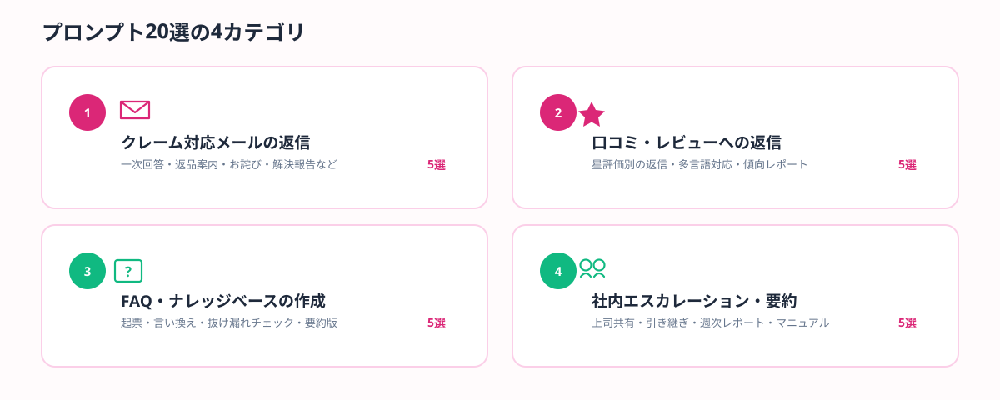

クレームメールへの返信に毎回頭を悩ませる。星1つの口コミにどう返信すればいいか分からず後回しにしてしまう。FAQページの更新が追いつかず、同じ質問に何度も個別対応している——カスタマー対応の現場では、こうした「言葉を選ぶのに時間がかかる」業務が積み重なりがちです。本記事では、クレーム対応・レビュー返信・FAQ作成・社内エスカレーションの4カテゴリで、ChatGPT・Claude・Geminiにそのままコピペして使えるAIプロンプトを20個紹介します。
カスタマー対応の現場で起きている3つの負担
カスタマーサポートやEC運営の現場でAI活用が遅れがちな理由は、「文章を書く作業」自体が思った以上に重いという点にあります。負担は大きく3つに整理できます。
- 精神的な負荷：クレーム対応は内容そのものに加え、「言葉選びを間違えると関係が悪化する」という緊張感が伴い、1件あたりの心理的コストが高い
- 繰り返しの工数：レビュー返信やFAQ対応は似たパターンの繰り返しが多いにもかかわらず、毎回ゼロから文章を考えている担当者が少なくない
- 属人化：ベテラン担当者の「うまい言い回し」が個人のノウハウのまま蓄積され、新人やパートタイムのスタッフに引き継がれていない
これらはすべて、「ゼロから考える」をAIに代行させ、人は最終確認とトーンの微調整に集中するという分担に切り替えることで、大きく改善できる領域です。
プロンプトを使う前に確認すべき3つの注意点
カスタマー対応は個人情報や機密情報を扱う場面が多いため、闇雲にAIへ貼り付けるのは危険です。以下の3点は必ず確認してから使い始めてください。
⚠️ 使用前の注意点
①氏名・電話番号・注文番号などの個人情報は仮の値に置き換えてから入力する／②AIの出力は必ず人が確認し、事実と異なる内容（ハルシネーション）が含まれていないかチェックする／③生成された文章のトーンが自社らしいかを確認し、必要に応じて言葉を調整する。
この3点を守れば、AIプロンプトは「文章の下書きを高速に作る道具」として安全に活用できます。それでは、カテゴリ別のプロンプト集を見ていきましょう。
カテゴリ別プロンプト集20選
角括弧（【】）の部分を自分の状況に置き換えてご利用ください。ChatGPT・Claude・Geminiのいずれでも使えます。

図1：AIプロンプト活用による文章作成時間の目安比較
①クレーム対応メールの返信（5選）
クレーム対応はトーンの誤りが最もリスクになる領域です。まず「受け止める姿勢」を文章に反映させることを意識したプロンプトを紹介します。
1. 初回クレーム受付の一次回答メール
顧客から届いたクレームに対する一次回答メールを書いてください。
・クレーム内容：【概要を1行】
・現在の対応状況：受付・調査着手
・今後の連絡予定：【例：2営業日以内に詳細をご連絡】
トーン：誠実に受け止め、言い訳に聞こえないよう配慮した文章にしてください。
2. 返品・交換対応の案内メール
返品・交換のご案内メールを作成してください。
・対象商品：【商品名】
・返品/交換の理由：【概要】
・手続き手順：【箇条書きで2〜3ステップ】
・返送期限：【日付】
件名・本文ともに、簡潔で分かりやすい形式にしてください。
3. 配送遅延・トラブルのお詫びメール
配送遅延についてのお詫びメールを書いてください。
・本来の到着予定日：【日付】
・新しい到着予定日：【日付】
・遅延の概要：【1行で記載、詳細な原因は書かなくてよい】
・お詫びの気持ちが伝わるトーンで、過度に卑屈にならないようにしてください。
4. 繰り返しクレームへの慎重な回答メール
同じお客様から複数回寄せられているクレームへの回答メールを作成してください。
・これまでの対応経緯：【箇条書きで2〜3点】
・今回追加で伝えたい内容：【記載】
・社内ルール上、対応できない要望がある場合の伝え方も含めてください（丁寧かつ明確に）。
5. クレームのクローズ（解決報告）メール
クレーム対応が完了したことをお伝えする解決報告メールを書いてください。
・実施した対応：【箇条書きで記載】
・再発防止策（あれば）：【記載】
・最後に、今後もご利用いただきたいという気持ちを添えてください。
②口コミ・レビューへの返信（5選）
レビュー返信は星評価ごとに「型」を変えることで、AIでも自然な文章を量産できます。
6. ★5の好意的レビューへの返信
以下の★5レビューへの返信コメントを作成してください。
【レビュー本文を貼り付け】
・お礼の気持ちを率直に伝える
・レビューで触れられた具体的な内容に1点以上言及する
・文字数100字程度、テンプレート感が出ないようにしてください。
7. ★2〜3の中立的レビューへの返信
以下の★2〜3の中立的なレビューへの返信を作成してください。
【レビュー本文を貼り付け】
・指摘内容を真摯に受け止める姿勢を示す
・改善に向けて取り組んでいる旨を伝える（具体策がなければ「検討中」とする）
・過度な謝罪にならないよう、前向きな言葉で締めてください。
8. ★1の批判的レビューへの返信
以下の★1の批判的なレビューへの返信を作成してください。
【レビュー本文を貼り付け】
・公開の場での返信であることを意識し、感情的にならない文章にする
・個別での対応が必要な場合は、問い合わせ窓口への案内を含める
・他の読者が見ても誠実さが伝わる内容にしてください。
9. 英語レビューへの返信（多言語対応）
以下の英語レビューに対して、英語で返信コメントを作成してください。
【レビュー本文（英語）を貼り付け】
・カジュアルすぎず、丁寧で自然な英語表現にする
・日本語訳も併記してください（社内確認用）。
10. 複数レビューの傾向をまとめるレポート作成
以下の複数のレビューを分析し、傾向をまとめたレポートを作成してください。
【レビュー本文を複数貼り付け】
出力形式：①良い評価で多い意見 ②改善要望で多い意見 ③優先して対応すべき項目（理由付き）の3項目で整理してください。
③FAQ・ナレッジベースの作成（5選）
FAQの整備は「作って終わり」になりがちですが、AIを使えば既存の問い合わせ履歴から継続的に更新できます。
11. 問い合わせ内容からFAQ項目を起票
以下の問い合わせ内容とその回答をもとに、FAQページ用の項目を作成してください。
【問い合わせ内容と回答を貼り付け】
出力形式：質問文（顧客視点の自然な言い回し）＋回答文（150字以内）のセットで出力してください。
12. 既存FAQの文章をやさしい言い回しに変換
以下のFAQ文章を、専門用語をできるだけ使わず、初めて利用するお客様にも伝わる言い回しに書き直してください。
【既存FAQ文章を貼り付け】
文字数は元の文章とほぼ同じ程度に収めてください。
13. FAQの抜け漏れチェック
以下は当社の既存FAQ一覧です。よくある問い合わせとして抜けていそうな項目を提案してください。
【既存FAQ一覧を貼り付け】
・サービス内容：【1〜2行で概要】
提案は5〜8項目、理由も簡潔に添えてください。
14. チャットボット向けFAQ短縮版作成
以下のFAQ文章を、チャットボットの回答用に60字以内へ要約してください。
【既存FAQ文章を貼り付け】
意味を変えず、画面で読みやすい簡潔な文体にしてください。
15. 季節・キャンペーン別の想定問い合わせFAQ作成
以下のキャンペーン内容について、想定される問い合わせとその回答案を作成してください。
・キャンペーン内容：【概要】
・実施期間：【日付】
・対象商品・条件：【記載】
想定問い合わせは8項目程度、回答案も併せて出力してください。
④社内エスカレーション・要約（5選）
クレームの内容を社内で正確かつ簡潔に共有することも、対応品質を保つ上で欠かせない業務です。

図2：本記事で紹介するプロンプト20選の4カテゴリ
16. クレーム内容を上司に共有する要約作成
以下のクレームの経緯を、上司へ共有するための要約として整理してください。
【対応履歴・やり取りを貼り付け】
出力形式：①発生事象 ②現在の対応状況 ③判断を求めたい点（あれば）の3項目で、簡潔にまとめてください。
17. 対応履歴の引き継ぎメモ作成
シフト交代・担当者変更のための引き継ぎメモを作成してください。
【これまでの対応履歴を貼り付け】
次の担当者がすぐに状況を把握できるよう、経緯・現状・次にすべきことの順で整理してください。
18. クレーム傾向の週次レポート作成
以下の今週のクレーム一覧から、傾向をまとめた週次レポートを作成してください。
【クレーム一覧（件数・内容）を貼り付け】
出力形式：①件数の傾向 ②目立った内容 ③来週注意すべき点の3項目で、経営層にも共有できる文体にしてください。
19. エスカレーション基準のチェックリスト作成
カスタマー対応で「上司に必ず相談すべきケース」を判断するチェックリストを作成してください。
・業種・商材：【記載】
・過去に判断を誤った事例（あれば）：【概要】
箇条書きで8項目程度、現場のスタッフがすぐ確認できる形式にしてください。
20. 対応マニュアルのドラフト作成
新人スタッフ向けのカスタマー対応マニュアルのドラフトを作成してください。
・想定される問い合わせカテゴリ：【箇条書きで記載】
・絶対に守るべきNG対応（あれば）：【記載】
章立てを付け、初めて読む人でも流れが分かる構成にしてください。
プロンプトだけでは限界が来たときに検討したいこと
こうしたプロンプトは、担当者が手元のChatGPTやClaudeにコピペして使う「個人の工数削減」には非常に有効です。ただし、問い合わせ件数が増えてくると、次のような限界も見えてきます。
- 毎回コピペして使うこと自体が手間になり、結局使われなくなる
- FAQやレビュー対応のパターンが定型化しているのに、自動応答の仕組みがなく人手対応が残っている
- 問い合わせ内容のデータが蓄積されているのに、傾向分析や自動振り分けに活用できていない
この段階に来たら、チャットボットへの組み込みや問い合わせ管理システムとの連携など、プロンプトを「仕組み」として埋め込む段階に進む価値があります。社内にAI開発の知見を持つ人材がいない場合は、必要な範囲だけをスポット外注で依頼するという選択肢も検討してみてください。
🔧 「カスタマー対応をもっと仕組み化したい」企業様へ
ANKENでは、チャットボット導入やFAQ整備の自動化を、固定費ゼロ・週末対応のエンジニアとスポットマッチングで依頼できます。
よくある質問
- Q. クレーム対応にAIプロンプトは使えますか？
- A. 使えます。トーンや謝罪の言い回しを整えたクレーム返信文をAIで下書きできます。
- Q. プロンプトを使う前に注意すべきことは？
- A. 個人情報の入力を避けること、最終確認は人が行うことの2点に注意が必要です。
- Q. プロンプトだけで対応しきれない場合はどうすればいいですか？
- A. FAQ整備やチャットボット導入など、仕組み化をスポット外注で検討するのが有効です。
まとめ・ANKENへのご相談
カスタマー対応におけるAIプロンプトの活用は、「言葉を選ぶ時間」を短縮しながら、対応の質を落とさないための現実的な手段です。クレーム対応・レビュー返信・FAQ作成・社内エスカレーションの4カテゴリそれぞれに合ったプロンプトを使い分けることで、担当者の負担を大きく減らすことができます。
個人の工数削減だけでなく、仕組みとしての自動化を検討したい場合は、ANKENがチャットボット導入やFAQ整備の構築をスポット外注で支援します。「対応件数が増えて手が回らない」という企業様は、お気軽にご相談ください。
カスタマー対応の仕組み化をスポットで相談したい企業様へ
チャットボット導入・FAQ整備の自動化を、固定費ゼロ・週末スポットから依頼可能です。
👉 無料でスポット依頼を相談する
初回相談は無料です。要件が固まっていなくてもOKです。
← ブログ一覧に戻る